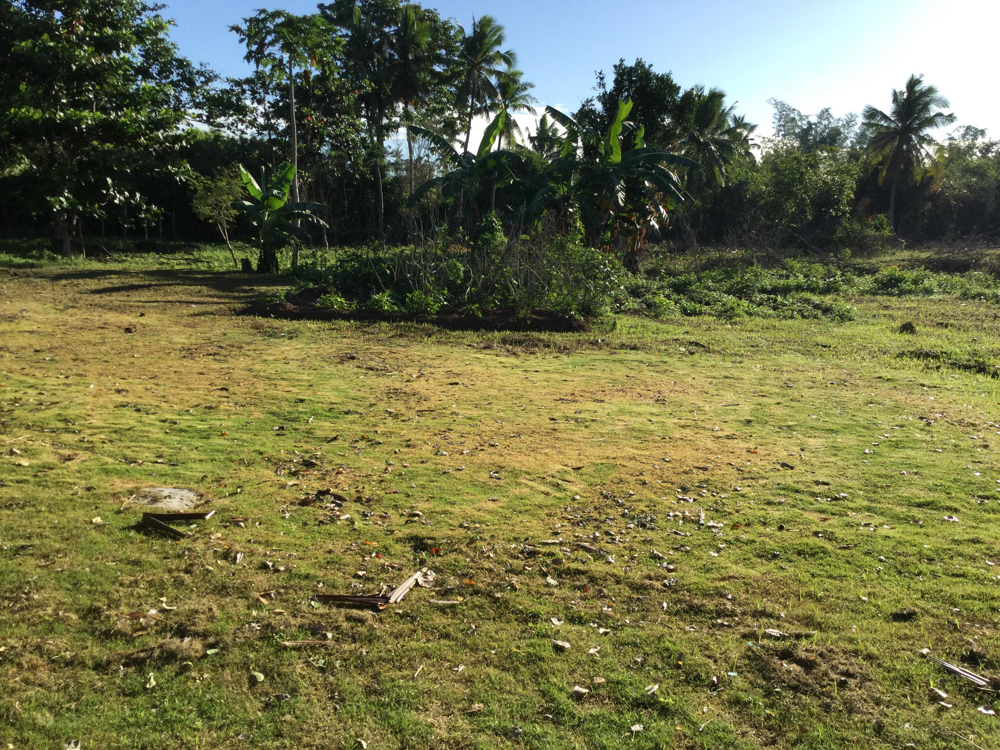

브라우저를 어떻게 읽을것 인가 utf-8 meta tag
Web
html spcification
strong 강조
u underline
head line H1
head line H2
head line H3
head line H4
head line H5
head line H6
frequency of english word
new line
new line 줄바꿈
paragraph tag 단락
마진은 css 언어
123141555
1231235123
123123123
123123123
unsplash 이미지 저작권 없는 사이트
이미지 추가 img

parent , chdil tag // list tag= li
ol tag ordered list 와 ul unordered list ol은 자동 넘버링 , ul 은 단락구분
li는 목차 즉 list
- 목차
- 가부리엘
- 나비
- 다람쥐
- 목살
table , tr , td